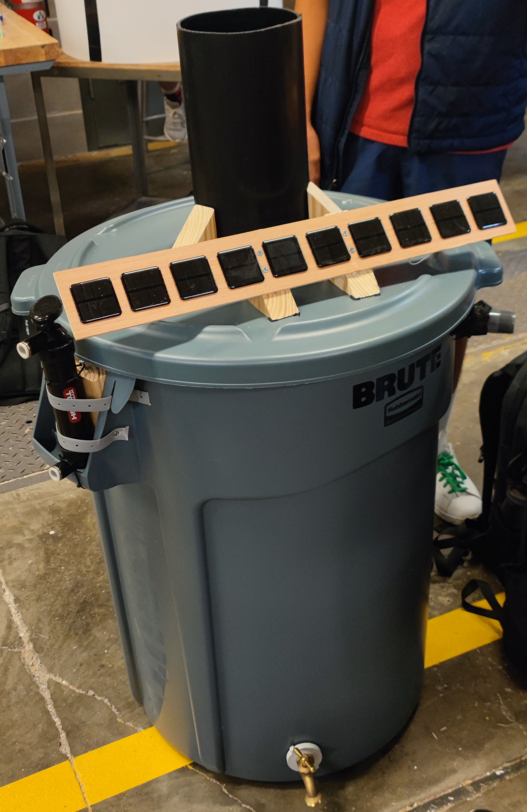
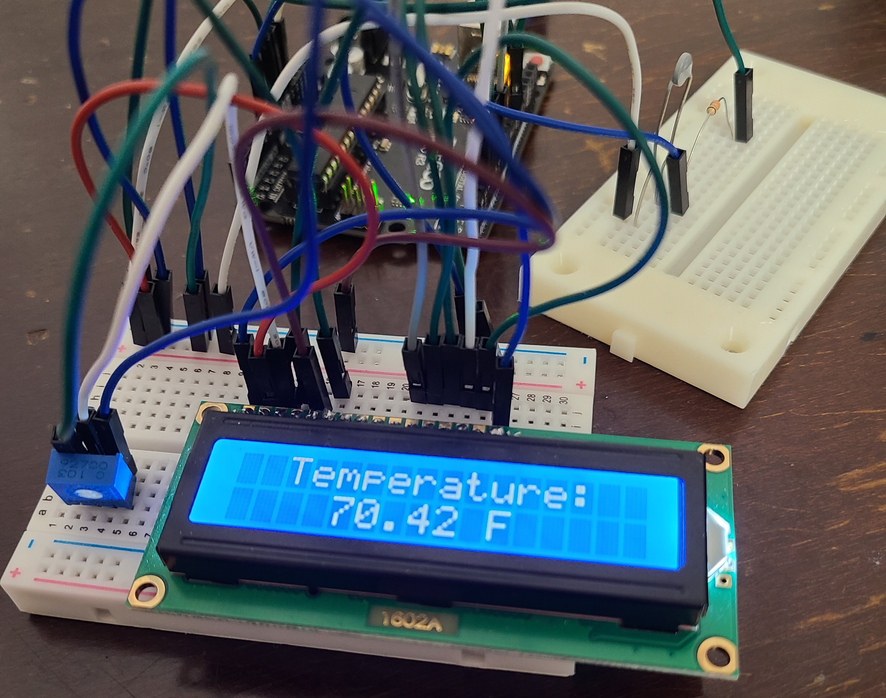
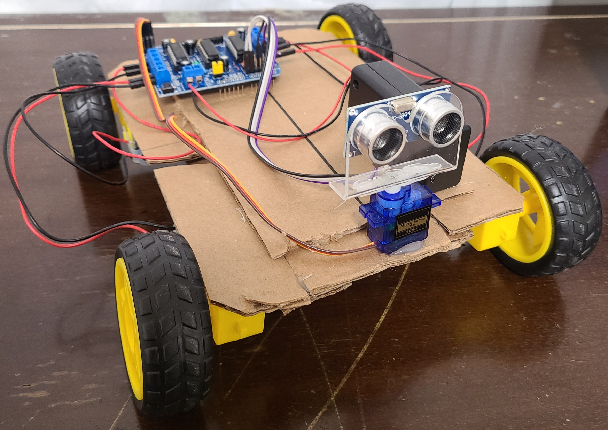
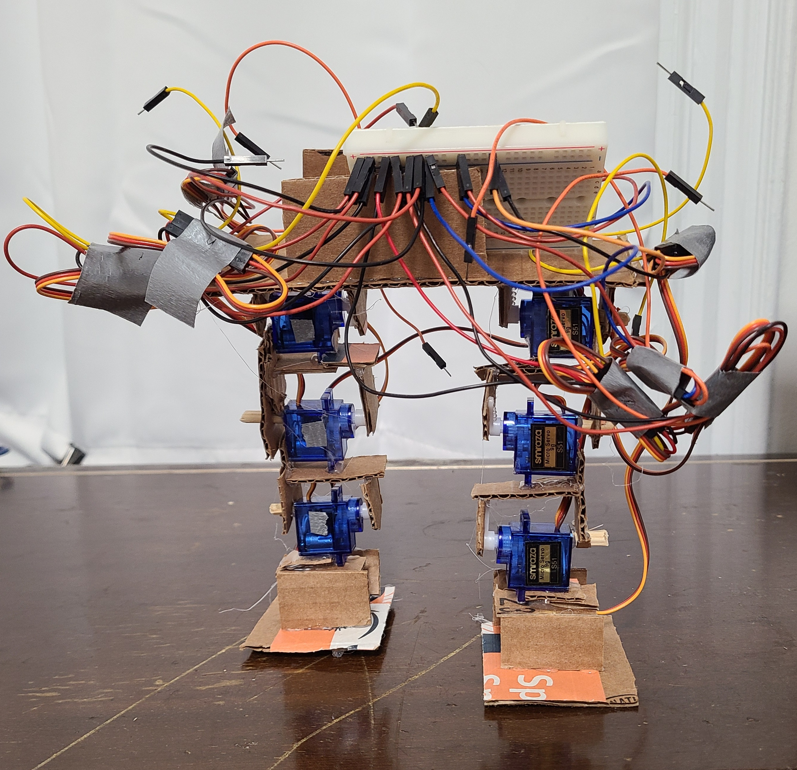

I'm Francisco Sandoval, an Electrical Engineering student.
I programmed this website from scratch to learn a new skill, and to display my projects and their progress.
My Projects

Water Filtering Rain Barrel with Solar LCD Display (2022)
Worked on the electrical wiring and soldering of circuit components
to create a useful device with a team of other student engineers.

Temperature Sensor (2022)
Used a thermistor and LCD display to display the temperature of the circuit's surroundings.
Used voltage divider and Steinhart-Hart equations to calculate the temperature in degrees Fahrenheit.

Obstacle Avoiding Car (2022)
Used the Arduino along with DC motors to program a car to run, assisted by an ultrasonic
sensor to assist in avoiding obstacles and finding new paths.

Walking Robot (Ongoing)
Positioned several servo motors to make the robotic structure
walk forward with an Arduino. As there is room for improvements, specifically in the structure material, this 2022 project is ongoing.